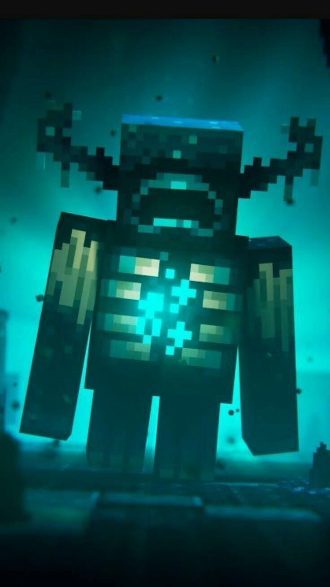
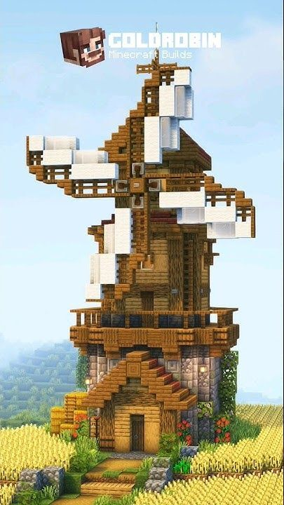
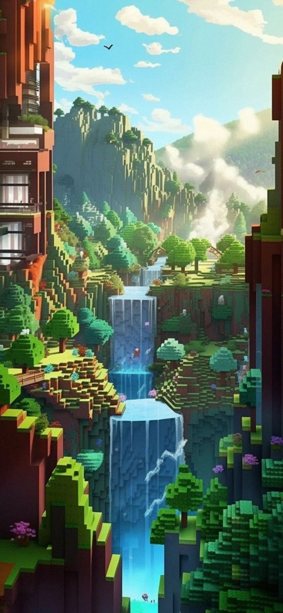

Legjobb Tippek a Minecrafthoz
  A Minecraft tele van kihívásokkal, de a megfelelő tippekkel és trükkökkel sokkal könnyebb boldogulni. Az alábbiakban összegyűjtöttük a legjobb tanácsokat, amelyek segítenek a Minecraft világában:
- Ne felejts el bázist építeni: Az első dolog, amit tenned kell, hogy építesz egy biztonságos bázist, ahol elbújhatsz a szörnyek elől!
- Használj fényt: A világítás kulcsfontosságú! Helyezz el lámpásokat és gyertyákat, hogy megakadályozd a szörnyek spawnolását.
- Gyűjts erőforrásokat: Mindig gyűjtsd össze a szükséges erőforrásokat, mint például a fa, kő és élelmiszer, mielőtt elindulsz felfedezni!
Stratégiai Tanácsok
Az alábbi stratégiák segíthetnek a sikeres játékban:
- Tervezd meg a kalandjaidat: Mindig tudd, merre mész, és mit szeretnél felfedezni!
- Építs kapcsolatokat: Csatlakozz barátaidhoz, és játssz közösen! A csapatmunka mindig előnyös!
- Kísérletezz! Ne félj kísérletezni az új blokkokkal és mechanikákkal, hogy új dolgokat tanulj!
Ha ezeket a tippeket követed, a Minecraft világában sokkal sikeresebbé válhatsz!